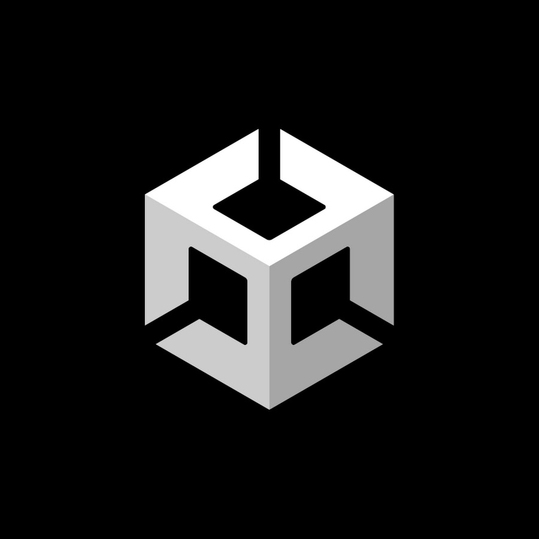

While I work my way through school, I would like to learn how to create and design games. After I graduate, I would like to work for a game company and create games for many people to enjoy. Another option would be to do independent game development and work on my own games and create my own game ideas. Eventually I might even create my own company and create a team of other enthusiastic game devs and create games that are big and wonderful and entertaining!

Over time, I will learn how to use game engines like Unreal Engine and Unity. These engines are great tools for game development as they are commonly used in the game community. I also hope to learn what makes design. I'm interested in creating the story and the elements that users experience and I think by creating many examples of it, I will learn how to design very well when I eventually make full games. I will work piece my piece until I have full finished products!